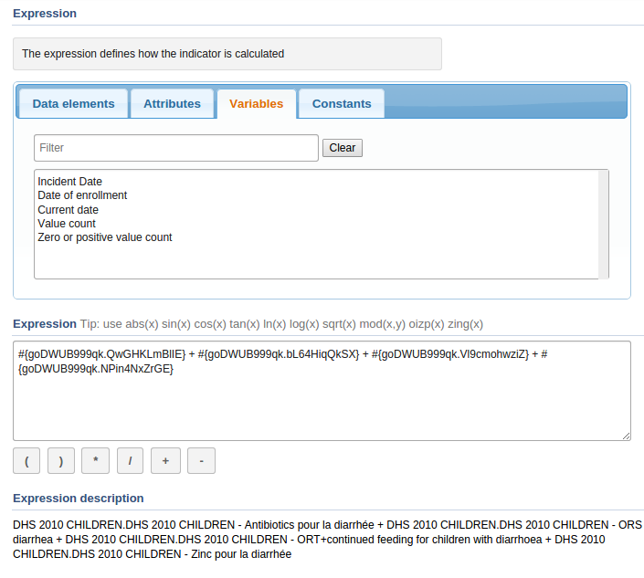
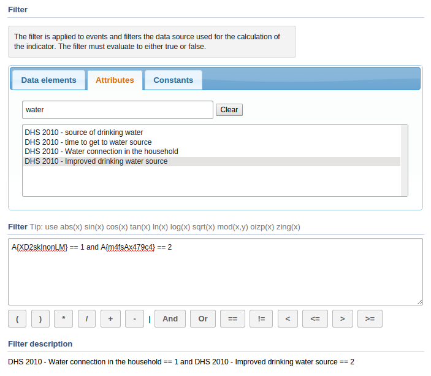

- 26.4.1. About program indicators
- 26.4.2. Create a program indicator
- 26.4.3. Create a program indicator group
- 26.4.4. Edit program indicators
- 26.4.5. Change sharing settings for program indicators
- 26.4.6. Delete program indicators
- 26.4.7. Display program indicators
- 26.4.8. Translate program indicators
- 26.4.9. Edit program indicator groups
- 26.4.10. Delete program indicator groups
- 26.4.11. Display program indicator groups
- 26.4.12. Translate program indicator groups
Program indicators are expressions based on data elements and attributes of tracked entities which can be used to calculate values based on a formula.
Program indicators consist of:
-
an analytics type
-
an aggregation type
-
an expression
-
a filter
Program indicators are evaluated based on the assigned aggregation type, expression and filter. The order of evaluation is as follows:
-
The filter will filter the events which become part of the evaluation / aggregation routine.
-
The expression will be evaluated per event.
-
All evaluated expression values will be aggregated according to the aggregation type of the program indicator.
In the Programs / Attributes app, you manage the following program indicator objects:
Table 26.5. Program indicator objects in the Programs / Attributes app
|
Object type |
Available functions |
|---|---|
|
Program indicator |
Create, edit, share, delete, show details and translate |
|
Program indicator group |
Create, edit, delete, show details and translate |
The available analytics types are events and enrollments. The analytics type defines whether the program indicator is calculated based on events or program enrollments. This has an impact on what type of calculations can be made.
-
Events implies a data source where each event exists as an independent row. This is suitable for performing aggregations such as counts and sums.
-
Enrollments implies a data source where all events for a single enrollment is combined on the same row. This allows for calculations which can compare event data from various program stages within a program enrollment.
The aggregation type determines how the program indicator will be aggregated. The following aggregation types are available:
-
Average
-
Sum
-
Count
-
Standard Deviation
-
Variance
-
Min
-
Max
-
Custom
The "custom" aggregation type allows you to specify the aggregation type in-line in the expression. All other aggregation types are applied to the entire expression.
Using the "custom" aggregation type might lead to an exception of the order of evaluation described above where individual parts of the expression can be evaluated and aggregated, as opposed to the entire expression being evaluated prior to aggregation.
The following aggregation type operators can be used within expressions: sum, count, stddev, variance, min, max.
The expression defines how the indicator is being calculated. The expression can contain references to various entities which will be substituted with a related values when the indicator is calculated:
-
Data elements: Will be substituted with the value of the data element for the time period and organisation unit for which the calculation is done. Refers to both program stage and data element.
-
Attributes: Will be substituted with the value of the attribute for the person / tracked entity for which the calculation is done.
-
Variables: Will be substituted with special values linked to the program, including incident date and date of enrollment for the person, current date and count of values in the expression for the time period and organisation unit for which the calculation is done.
-
Constants: Will be substituted with the value of the constant.
The expression is a mathematical expression that can contain operators which include multiply, divide, plus and minus. The expression will be evaluated per event, then aggregated according to its aggregation type.
Program indicator list with context menu
|  |
Example 26.6.
An expression that includes both attributes, data elements and constants looks like this:
(A{GPkGfbmArby} + #{mCXR7u4kNBW.NFkjsNiQ9PH}) * C{bCqvfPR02Im}
Example 26.7.
An expression which uses the custom aggregation type and hence can use inline aggregation types looks like this:
(sum(#{mCXR7u4kNBW.K0A4BauXJDl} * #{mCXR7u4kNBW.NFkjsNiQ9PH}) / sum(#{mCXR7u4kNBW.NFkjsNiQ9PH})) * 100
Note how the "sum" aggregation operator is used inside the expression itself.
The filter is applied to events and filters the data source used for the calculation of the indicator. I.e. the filter is applied to the set of events before the indicator expression is being evaluated. The filter must evaluate to either true or false. It filter is applied to each individual event. If the filter evaluates to true then the event is included later in the expression evaluation, if not it is ignored. The filter can, in a similar way as expressions, contain references to data elements, attributes and constants.
The indicator filter can in addition use logical operators including the following:
Table 26.6. Operators
| Operator | Description |
|---|---|
| and | Logical AND |
| or | Logical OR |
| == | Equal to |
| != | Not equal to |
| < | Less than |
| <= | Less than or equal to |
| > | Greater than |
| >= | Greater than or equal to |
These operators can be used to form logical expressions which ultimately evaluate to either true or false. For example you can assert that multiple data elements must be a specific value, or that specific attributes must have numerical values less or greater than a constant.
Program indicator list with context menu
|  |
You can switch between data elements, attributes, variables and constants by using the tabs. You can include such items into expressions and filters by double-clicking in the list. The buttons below the expression area can be used to insert operators.
Example 26.8.
A filter that uses both attributes and data elements looks like this:
A{cejWyOfXge6} == 'Female' and #{A03MvHHogjR.a3kGcGDCuk6} <= 2
![[Tip]](../Resources/tip.png)
|
Tip |
|---|---|
|
DHIS2 is using the JEXL library for evaluating expressions which supports additional syntax beyond what is covered in this documentation. See the reference at the project home page to learn how you can create more sophisticated expressions |
The indicator expression and filter support a range of functions. The functions can be applied to data elements and attributes:
Table 26.7. Functions
| Function | Arguments | Description |
|---|---|---|
| d2:daysBetween | (date, date) | Produces the number of days between two data elements/attributes of type date. The static date format is 'yyyy-MM-dd'. |
| d2:condition | (boolean-expr, true-val, false-val) | Evaluates the conditional expression and if true returns the true value, if false returns the false value. The conditional expression must be quoted. |
| d2:zing | (number) | Evaluates the data element/attribute of type number to zero if the value is negative, otherwise to the value itself. |
| d2:oizp | (number) | Evaluates the data element/attribute of type number to one if the value is zero or positive, otherwise to zero. |
| d2:zpvc | (object, [,object, object,...]) | Returns the number of numeric zero and positive values among the given object arguments. Can be provided any number of arguments. |
Example 26.9.
An expression that uses the "zing" and "oizp" functions looks like this:
d2:zing(A{GPkGfbmArby}) + d2:oizp(#{mCXR7u4kNBW.NFkjsNiQ9PH}))
Example 26.10.
An expression that uses the "daysBetween" function looks like this:
d2:daysBetween(#{mCXR7u4kNBW.k8ja2Aif1Ae},'2015-06-01')
Example 26.11.
An expression that uses the "condition" function looks like this:
d2:condition('#{mCXR7u4kNBW.NFkjsNiQ9PH} > 100',150,50)
Example 26.12.
An expression that uses the "zpvc" function looks like this:
d2:zpvc(A{GPkGfbmArby}),#{mCXR7u4kNBW.NFkjsNiQ9PH}),4,-1)
The indicator expression and filter support a range of variables:
Table 26.8. Variables for analytics type events
|
Variable |
Used for analytics type |
Description |
|---|---|---|
V{completed_date}
|
Events Enrollments |
NEW Analytics type: Enrollment: for enrollment analytics er dette den datoen som er satt som enddate, men bare dersom status er "completed Events: For events er dette datoen for når eventen ble satt completed |
V{current_date}
|
The current date. |
|
V{due_date}
|
The date when an event is due. |
|
V{enrollment_count}
|
The count of enrollments (useful in combination with filters). |
|
V{enrollment_date}
|
The date of when the tracked entity instance was enrolled in the program. |
|
V{enrollment_status}
|
inneholder status for enrollmenten |
|
V{event_count}
|
The count of events (useful in combination with filters). |
|
V{event_date}
|
Enrollment mode: for enrollment analytics er dette den datoen når den siste
eventen fant sted The date of when the event took place. Event: as before "The date of when the event took place." This variable was previously called: V{excecution_date} |
|
V{incident_date}
|
The date of the incidence of the event. |
|
V{tei_count}
|
The count of tracked entity instances (useful in combination with filters). |
|
V{value_count}
|
The number of non-null values in the expression part of the event. |
|
V{zero_pos_value_count}
|
The number of numeric positive values in the expression part of the event. |
Example 26.13.
An expression that uses the "value count" variable looks like this:
(#{A03MvHHogjR.a3kGcGDCuk6} + #{A03MvHHogjR.wQLfBvPrXqq}) / V{value_count}
Example 26.14.
An expression that uses the "event_date" and "incident_date" variables looks like this:
d2:daysBetween(V{incident_date},V{event_date})
![[Note]](../Resources/note.png)
|
Note |
|---|---|
|
A program indicator belongs to exactly one program. |
-
Open the Program / Attributes app and click Program.
-
Click the program you want to add a program indicator to and select View program indicators.
A list of existing indicators for the selected program opens. If the program doesn't have any program indicators, the list is empty.
-
Click Add new.
-
Enter program indicator details:
-
Name
-
Short name
-
Code
-
Description
-
-
Select number of Decimals in data output.
-
Select Analytics type: Events or Enrollments.
-
Select Aggregation type.
-
Select a Legend set.
-
Select a if you want to Display in form.
-
Create an Expression.
In the Data elements tab, click Select program stage to load the data elements which belong to the selected program.
Double-click on a data element to display the formula of the selected data element in the Expression field.
-
Create a Filter.
-
Click Add.
-
Open the Program / Attributes app and click Program indicator group.
-
Click Add new.
-
Enter program indicator group details:
-
Name
-
Description
-
-
In the list of Available program indicators, double-click the program indicators you want to assign to your group.
-
Click Add.
-
Open the Program / Attributes app and click Program.
-
Click the relevant program and select View program indicators.
A list of existing indicators for the selected program opens. If the program doesn't have any program indicators, the list is empty.
-
Click the program indicator you want to modify and select Edit.
-
Modify the options you want.
-
Click Update.
-
Open the Program / Attributes app and click Program.
-
Click the relevant program and select View program indicators.
A list of existing indicators for the selected program opens. If the program doesn't have any program indicators, the list is empty.
-
Click the program indicator you want to modify and select Sharing settings.
-
(Optional) Add a user group:
-
Search for a user group and select it.
-
Click the plus icon.
The user group is added to the list.
-
-
Change the settings for the user groups you want to modify.
-
Can view : Everyone in the user group can view the program indicator.
-
Can edit and view : Everyone in the user group can view and edit the program indicator.
-
-
Click Save.
-
Open the Program / Attributes app and click Program.
-
Click the relevant program and select View program indicators.
A list of existing indicators for the selected program opens. If the program doesn't have any program indicators, the list is empty.
-
Click the program indicator you want to delete and select Remove.
-
Click OK to confirm.
-
Open the Program / Attributes app and click Program.
-
Click the relevant program and select View program indicators.
A list of existing indicators for the selected program opens. If the program doesn't have any program indicators, the list is empty.
-
Click the program indicator you want to display and select Show details.
-
Open the Program / Attributes app and click Program.
-
Click the relevant program and select View program indicators.
A list of existing indicators for the selected program opens. If the program doesn't have any program indicators, the list is empty.
-
Click the program indicator you want to modify and select Translate.
-
Select a locale.
-
Type a Name, Short name and Description.
-
Click Save.
-
Open the Program / Attributes app and click Program indicator group.
-
In the list, click the program indicator group you want to edit and select Edit.
-
Modify the options you want.
-
Click Update.
-
Open the Program / Attributes app and click Program indicator group.
-
In the list, click the program indicator group you want to delete and select Remove.
-
Open the Program / Attributes app and click Program indicator group.
-
In the list, click the program indicator group you want to view and select Show details.